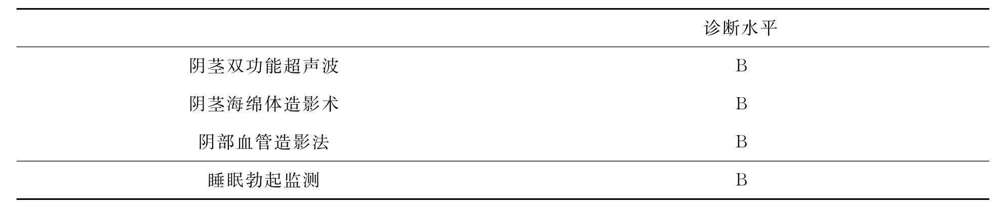

ED治疗历史中有三个标志性飞跃，即1973年的可膨胀性阴茎起勃器植入手术疗法，1982年的阴茎海绵体内药物注射疗法和1998年的口服药物疗法-枸橼酸西地那非。今天，大部分ED患者首先可以选择口服药物磷酸二酯酶-5抑制剂，如果治疗失败或者希望得到进一步治疗，则可考虑第二线（真空缩窄装置，经尿道给药）和第三线（阴茎海绵体药物注射）治疗方法。对上述治疗失败或拒绝上述治疗的患者，通常可选择阴茎起勃器植入手术治疗。
Esposito等在2004年报道了改变生活方式（通过减少热量摄入和增加身体锻炼使得体重下降超过10%）对勃起功能的影响，研究对象为患有ED（IIEF为21或更低）的110例肥胖患者（体重指数≥30），年龄在35岁到55岁之间，没有糖尿病、心脏病和高血压。改变生活方式组的IIEF评分由13.9±4.0增加至17±5，而对照组的IIEF评分无显著改善。这一研究证实了生活方式的改变有助于勃起功能的改善。
ED的重要病因是血管硬化。血管硬化与代谢综合征（血脂异常、高血压、中心型肥胖、高胰岛素血症）密切相关，而这些也是ED的危险因素。因此，规律锻炼，健康饮食，戒烟和控制饮酒可以减少ED发生的危险性，从而改善勃起功能。
长时间的自行车运动也是ED的危险因素，因为这项运动可能压迫会阴的阴茎动脉。Schwarzer等发现自行车爱好者ED的发病率达到4%，而相同年龄的游泳爱好者的患病率为2%。因此，如果发现存在阴茎血管受压，则需要改变自行车坐椅或改变骑自行车的方式。
当患者使用某一药物后出现性功能障碍时，需要考虑该药物是否与性欲减退、勃起障碍、射精加快或延迟等性功能障碍相关。通常，换用不同种类的药物是首选的处理方法。降压药能够降低血压，但又可能影响阴茎的血管，从而影响勃起功能。高血压患者在服降压药后出现性功能障碍时，可换用α-受体阻滞剂、离子通道阻断剂和血管紧张素转化酶抑制剂等来逆转一些患者的勃起功能。采用抗抑郁药治疗的患者出现性功能障碍时，可以考虑采用等待观察、换用其他药物（丁氨苯丙酮、聚酰胺纤维、丁螺环酮、米氮平）、暂时停药、选择性5羟色胺再吸收抑制剂减量，和（或）使用PDE-5抑制剂。
性心理治疗主要适用于具有导致ED的潜在的精神心理因素的患者，与磷酸二酯酶抑制剂相比，其治疗的时间较长，但对于一些具有特定病因的患者，性心理治疗有可能使患者治愈。目前性心理治疗的主要手段包括：感知行为的纠正以改变不适应的感觉，行为疗法（脱敏治疗和建立自信心），挖掘患者过去的行为以便进行系统的治疗，以及配偶共同治疗。在一些混合性ED患者中，性心理治疗能够缓解紧张情绪，清除对药物和手术治疗不切实际的期望。
与ED相关的甲状腺、肾上腺、垂体后叶和下丘脑等功能障碍的患者，其评估及治疗主要由内分泌医师进行。患有ED的老年男性具有不同程度的性腺功能低下。对磷酸二酯酶抑制剂反应较差的患者，如伴有性腺功能低下，可以考虑进行雄激素补充治疗，这有可能改善磷酸二酯酶抑制剂的疗效。
用于注射的睾酮制剂，包括环戊丙酸盐睾酮和庚酸睾酮，注射后可使血中的睾酮达到正常水平。但这些药物不能复制睾酮在人体内的生理节律。相反，这些药物通过深部肌肉注射后（200～250mg，每两周一次），导致血睾酮在72小时内超出生理水平，并且激素水平在10～12天内呈指数下降。早期高水平的激素会使一些患者有不适的反应，而另外一些患者的整体自我感觉和性欲都得到改善。
睾酮透皮吸收贴剂是通过皮肤吸收睾酮的方式补充睾酮。患者在早晨使用，能够模拟人睾酮水平的生理变化。睾酮透皮吸收贴剂可用于阴囊局部皮肤、手臂、后背及臀部。用于阴囊皮肤贴剂（4到6mg）能够使睾酮达到65%的生理浓度，贴剂不易固定，因为阴囊皮肤中有高浓度的5α还原酶，能够产生高浓度的双氢睾酮。而用于手臂等部位的睾酮经皮治疗系统每天用5mg剂量，避免了经阴囊皮肤治疗的不便，使用较为方便，是目前主要的使用方式。睾酮贴剂的主要副作用有瘙痒、慢性皮肤刺激和过敏性接触皮炎。
睾酮也可以采用凝胶的方式通过皮肤吸收使用。1%睾酮凝胶剂可以含有50mg，75mg，或100mg的睾酮。每天早晨在肩、上臂或腹部清洁干燥的皮肤用药。由于睾酮可以通过皮肤扩散，因此使用后必须将手彻底洗净。另一种局部使用的睾酮凝胶剂含1%的睾酮，1次应用能够提供持续24小时的经皮肤吸收。
因为存在肝脏的首过效应，通过口服补充睾酮时，睾酮的剂量应较大，每天口服剂量需要超过200mg才能保持正常的睾酮浓度。但口服大剂量的睾酮有肝毒性，可能导致肝炎、胆汁淤积性黄疸、肝癌、出血性肝循环和肝癌。唯一能保持口服药活性且安全的形式是十一酸酯睾酮，这是由于它有亲酯性长链，能够部分通过淋巴系统吸收，从而减少了肝脏对药物的灭活。服用十一酸酯睾酮2～3小时后血中的浓度达到高峰，6～8小时后恢复到服药前的水平。饮食对药物吸收影响较大，具体的服用剂量因人而异。睾酮还可以通过舌下含服药物，口腔黏膜贴剂等方式使用。
在高泌乳素血症伴或不伴性腺功能低下的患者中，单纯睾酮治疗不能改善性功能。治疗前首先要排除刺激性药物，如：雌激素、吗啡、镇静剂和精神类抑制药物。溴麦角环肽是一种多巴胺激动剂，它能够降低泌乳素在血中的浓度和恢复睾酮的正常水平，还可用来缩小分泌泌乳素的腺瘤的大小。如果药物治疗的疗效欠佳或因视神经受到挤压出现视觉障碍时，可考虑神经外科手术。
睾酮补充治疗对没有禁忌证的性腺功能低下的年轻男性有明确的治疗指征。然而，在某些患者中可能弊大于利。超过生理浓度的睾酮水平抑制了LH和FSH的生成，导致不育、男性女化。长期治疗最常见的实验室检查异常就是红细胞增多。其他的异常还包括：红细胞压积升高，血栓素-A2的升高和血小板的聚集力增加，而这些是心血管疾病的危险因素。雄激素能诱发或恶化睡眠呼吸暂停。
由于雄激素与前列腺癌的发生密切相关，因此雄激素补充治疗对前列腺的安全性在临床上就显得十分重要。目前许多研究证实，在前列腺正常的患者中，雄激素补充治疗不会诱发前列腺癌，安慰剂对照研究表明，与对照组比较，补充雄激素的患者的前列腺体积、PSA和下尿路症状方面无显著差异。尽管雄激素补充治疗可能恶化潜在的前列腺癌，但由于很多老年患者在激素补充治疗后性欲和勃起功能得到了改善，因此不能完全对其进行否定。与患者详细沟通，使患者了解激素补充治疗的利弊，如果患者要求激素补充治疗，在激素治疗之前，患者应行前列腺指诊和PSA的检测。如果有怀疑，应该做超声引导下的前列腺穿刺活检。已经确诊的乳腺癌和前列腺癌是激素补充治疗的绝对禁忌证。在激素治疗过程中，应每6个月给患者做前列腺指诊和PSA检测，实验室检查应包括：血红蛋白水平、红细胞压积、肝功能、胆固醇和脂蛋白水平。雄激素补充治疗的效果评价主要依据临床疗效而不是血中的睾酮水平。
西地那非、伐地那非和他达拉非都是目前用于治疗ED的磷酸二酯酶-5抑制剂。由于这类药物的疗效较好、安全且使用方便，因而是目前用于ED的首选治疗方法。
（1）作用机制：性刺激使阴茎神经末梢和血管内皮释放一氧化氮（NO），NO作用于血管和海绵体平滑肌细胞，激活鸟苷酸环化酶，使cGMP水平升高，降低细胞内Ca2＋的水平，使平滑肌细胞松弛，阴茎勃起。cGMP的降解是通过PDE-5进行的，因此PDE-5抑制剂通过竞争性抑制PDE-5的活性，从而减少cGMP的降解，改善阴茎的勃起功能。但如果没有性刺激通过神经纤维造成NO的释放，PDE-5抑制剂则不能生效。因此，对于双侧性神经都破坏的盆腔手术，PDE-5抑制剂是无效的。
（2）临床疗效：许多临床研究都证实了西地那非、伐地那非和他达拉非这三种药物治疗ED的有效性和安全性。服用25～100mg西地那非后，勃起功能改善的比例为56%～84%，而安慰剂组只有25%。西地那非的剂量超过100mg，进一步改善勃起功能的作用就很小，而副作用则明显增加。整体上，70%～80%的ED患者在服用西地那非后勃起功能显著改善，不同亚组治疗的有效率分别为：高血压79%，糖尿病56%，根治性前列腺切除术后43%，脊髓损伤80%。伐地那非也具有相似的疗效：服用10mg和20mg的伐地那非后，勃起功能改善的比例分别为73%和81%。服用12周后，平均IIEF评分由基线的12.8增加至21，而安慰剂组只从13.6增加至15.0。汇总他达拉非的三期研究的1112例患者的资料显示，服用20mg的他达拉非的患者的IIEF评分为24，而安慰剂组为15。服药后半小时到36小时，70%的患者成功完成性交。对于大多数的难治性ED患者，包括糖尿病、重度ED及前列腺根治性切除术后，3种PDE-5抑制剂都是有效的。目前尚缺乏3种PDE-5抑制剂直接对比的临床研究，但从已有的研究来看，3种药物的疗效相似。
（3）起效时间：研究显示，3种PDE-5抑制剂起效时间分别为：西地那非为14分钟，伐地那非为10分钟，他达拉非为16分钟。然而，使用药物后20分钟的性交成功率要少于服药1小时后的。因此，如果患者在服药后没有快速起效，应建议在服药后1小时（西地那非、伐地那非）或2小时（他达拉非）后，待药物浓度达到高峰时再进行性交。高脂饮食能够延缓西地那非和伐地那非的吸收，而不影响他达拉非的吸收。
（4）有效时间：与西地那非和伐地那非的半衰期（4.5小时）相比，他达拉非的半衰期更长（17.5小时），因此，他达那非作用的有效时间更长，可以达到36小时，这使得患者安排性生活更加从容和方便。
（5）副作用：决定药物副作用的关键是药物的生化选择性。对于PDE-5抑制剂来说，选择性是通过与其他PDE或其他蛋白相比的PDE-5的IC50表现出来的。已经知道了PDE有11个家族成员（PDE-1到PDE-11），他们在细胞内有复杂的相互作用。阴茎海绵体平滑肌细胞内有高浓度的PDE-5。西地那非和伐地那非对PDE-6有轻微的作用，它们作用于PDE-6的IC50要比PDE-5高4到10倍，因为存在对PDE-6的作用，这就导致了一些患者出现视觉障碍的副作用。他达拉非可以微弱作用于PDE-11，但其效果尚不清楚。PDE-5抑制剂的副作用多与药物作用于其他器官或组织的PDE有关。在随机对照研究中，服用西地那非和伐地那非的患者更多出现面部潮红（10%）和视觉障碍，而他达拉非的患者后背痛/肌肉痛更常见（1%～4%）。通常这些副作用都较轻微，2～4周内都能消退，只有一小部分患者需要停止使用药物。除了视觉障碍外，PDE-5抑制剂作用于血管或胃肠道平滑肌，导致头痛（15%）、面部充血、鼻炎（伐地那非和西地那非中为5%～10%）、轻微的低血压、消化不良等。
ED在动脉粥样硬化性冠心病患者中很常见。在对FDA批准进入市场的三种PDE-5抑制剂进行的对照研究和上市后研究发现，与对照相比较，PDE-5抑制剂并没有显著增加心梗发生率和死亡率。服用PDE-5抑制剂的患者在性生活中发生心绞痛，应及时停止性活动，休息5至10分钟，如果疼痛不缓解，则应去医院急诊治疗，并告知急救人员你服用了PDE-5抑制剂。服用PDE-5抑制剂出现急性心梗则给予常规治疗（除了硝酸酯药物）。如果患者在服用西地那非或伐地那非后出现胸痛，则至少24小时内不要服用硝酸甘油，如果是他达拉非则应至少48小时。如患者服用硝酸酯药物和PDE-5抑制剂后出现低血压，则患者应采用Trendelenburg体位，必要时静脉给予α-肾上腺素激动剂（酚妥拉明）。对于顽固性低血压，ACC/AHA的指南建议给予主动脉球囊反搏治疗。目前还没有一种专门的药物能够拮抗PDE-5抑制剂和硝酸酯药物的相互作用。
PDE-5抑制剂对QTc略有影响，但只有伐地那非不被推荐用于服用IA型抗心律失常药物（如奎尼丁或普鲁卡因胺）、3型抗心律失常药物（如索他洛尔或胺碘酮），以及先天性长QT间期综合征的患者。
近年来发现，服用PDE-5抑制剂的患者有出现非动脉炎性前部缺血性视神经病变（nonarteritic anterior ischemic optic neuropathy，NAION）的报告。流行病学上，NAION是50岁以上男性第二位常见的视神经病变。NAION与心血管疾病、ED具有相似的危险因素，如老年、血脂异常、糖尿病、高血压、吸烟等。迄今为止，FDA收到的与PDE-5抑制剂相关的NAION例数不超过50例，其中西地那非有38例，他达拉非4例，伐地那非1例。由于服用PDE-5抑制剂的患者众多，而NAION例数又太少，因此很难鉴定PDE-5抑制剂与NAION发生之间的直接因果关系。PDE-5抑制剂不建议用于既往有NAION发作的患者。如果患者在服用PDE-5抑制剂后出现视野缩小或尚失，无论有无疼痛，都需要急诊救治，并停用PDE-5抑制剂。
（6）注意事项和药物的相互作用：由于可能导致致命性的低血压，PDE-5抑制剂禁止与硝酸酯药物合用。对于严重的冠心病、左心室输出道梗阻、临床研究没有入选的遗传性视网膜退行性变疾病和阴茎异常勃起风险较高的患者（如镰状红细胞贫血、白血病等）也应禁止使用PDE-5抑制剂。PDE-5抑制剂不推荐或慎用于不稳定心绞痛、心衰、新近发生心梗、未控制的或致命性的心律失常、血压控制不理想（血压低于90/50mmHg或高于170/（100～110）mmHg）的患者。一些药物如酮康唑、伊曲康唑、蛋白酶抑制剂（如利托那伟）等通过阻断CYP3A4通路，减少PDE-5抑制剂的降解，因此服用这些药物的患者应减少PDE-5抑制剂的剂量。而另外一些药物如利福平，能够诱导CYP3A4的表达，增强PDE-5抑制剂的降解，因此患者需要增加PDE-5抑制剂的剂量。年龄超过65岁，肝功能受损，肾功能严重不全的患者，PDE-5抑制剂的血药浓度会升高。因此，这些患者应适当减少药物的剂量。α-受体阻滞剂和PDE-5抑制剂也能相互作用，导致患者血管过度扩张和低血压。
（7）起始剂量：推荐的西地那非起始剂量为50mg，伐地那非和他达拉非为10mg。根据患者的疗效和耐受性，药物范围可以是25～100mg和5～20mg。患者刚服药时疗效欠佳，但并不意味着患者对药物就没有反应。研究发现，西地那非治疗的成功率与服用次数相关，在起初的一到九次服药，成功率依次增加，到十次服药后，成功率才维持稳定。
阿朴吗啡是多巴胺能拮抗药，可激动D1和D2受体，引起阴茎勃起。Heaton等发现阿朴吗啡通过颊部黏膜吸收，能使67%的精神心理性ED患者的勃起功能获得改善。阿朴吗啡不是阿片类药物，在化学结构上与吗啡也无相关性，它通过作用于大脑的室旁核（哺乳动物中室旁核是性驱动中枢）而达到疗效。性觉醒对于增强阿朴吗啡的效果是必要的。阿朴吗啡起效迅速，使用后引起阴茎勃起的平均时间为12分钟，在用药后的2小时内，患者可以进行性生活。50分钟内达到最大血药浓度。随机双盲的安慰剂对照研究发现，使用2mg和4mg阿朴吗啡的患者产生足以性交的坚硬勃起的比例分别为45%和55%，而安慰剂组只有35%和36%。患者自我评价成功的占47%和59.9%。不良反应包括恶心（16.9%）、头晕（8.3%）、流汗（5%）、瞌睡（5.8%）、呵欠（7.9%）和呕吐（3.7%）。在使用最大推荐剂量时，0.6%的患者出现晕厥并伴有明显的血管迷走神经反应的前驱症状：恶心、呕吐、流汗、头晕和头重脚轻感。临床试验中未见药物食物存在相互反应（乙醇除外），且与硝酸酯药物也无相互作用。
育亨宾是一种中枢作用的α2肾上腺素能受体拮抗药。随机对照的研究发现，患器质性勃起功能障碍的患者在接受口服育亨宾6mg/天，一天3次，连续10周的治疗后与服用安慰剂的患者无显著差异。2005年美国泌尿协会指南中不推荐其用于ED的治疗。副反应包括胃肠道反应、心悸、头痛、激动、焦虑和血压升高（在心血管疾病患者中应慎用）。曲唑酮也不推荐用于ED的治疗。荟萃分析显示曲唑酮对ED的疗效与安慰剂组无显著差异。副反应包括瞌睡、恶心、呕吐、血压变化（低血压和高血压）、尿潴留和阴茎异常勃起（特别是治疗抑郁症的剂量水平）。
前列地尔是PGE1 的合成形式，是FDA核准用于海绵体内注射和经尿道治疗ED的唯一药剂。当注入尿道后，药物由尿道吸收转运至阴茎海绵体，刺激腺苷酸环化酶，使细胞内的钙离子水平降低，舒张血管及海绵体平滑肌细胞，导致阴茎勃起。经尿道给药勃起治疗系统（medicated urethral system for erection，MUSE）是通过专门的给药器将一颗非常小的半固体药丸（3mm×1mm）注入尿道远端（3cm）。临床研究发现，用药后66%的患者勃起功能获得改善。但上市后的临床观察，有效率只有50%。阴茎和（或）阴囊不适是经尿道治疗常见的副反应，并与剂量有明确的相关性，其发生率为33%，低血压和晕厥的发生率为1%～5.8%。故要求初次应在医院内给药，患者的性伴侣在射精后出现阴道不适的比例为10%。
海绵体内注射血管活性药物是ED最有效的非手术疗法。它起效较快，局部给药，减少了药物的全身副作用，以及与其他药物的相互作用，对各种类型的ED具有较好的疗效，适用于对PDE-5抑制剂不敏感或者不能耐受口服药物的副作用的患者。在PDE-5抑制剂不敏感的ED患者中，超过85%的患者在使用海绵体内注射治疗后获得较好的疗效。常见的注射药物有罂粟碱、酚妥拉明、前列地尔及复合制剂。
罂粟碱是由罂粟花分离出来的一种生物碱。它能非特异性地抑制PDE的活性，增加cAMP水平，阻滞电压依赖钙通道，从而减少钙内流，使得海绵体平滑肌松弛及阴茎血管舒张。罂粟碱在肝脏代谢，血浆半衰期为1～2小时。单次治疗剂量为15～60mg。主要的副作用是阴茎异常勃起（发生率多达6%）、海绵体纤维化（6%～30%，与注射技巧差、按压注射部位过短、注射剂量大于1ml和pH 3～4的低酸度有关）以及偶见肝酶升高。全身副反应包括头晕、脸色苍白和出冷汗，这些可能由血管迷走反射引起。
酚妥拉明是一种对α1和α2-肾上腺素能受体具有同样亲和力的竞争性α-肾上腺受体阻滞剂，血浆半衰期短（30分钟）。当单独在海绵体内注射时，它能增加海绵体血流而不显著地引起海绵体内压升高。最常见的全身副反应有低血压、反射性心动过速、鼻腔充血和胃肠道不适。
前列地尔通过升高细胞内cAMP水平，使平滑肌松弛，血管扩张，并抑制血小板聚集。前列地尔由前列腺素-15-羟基脱氢酶代谢，该酶被证实在人类阴茎海绵体内也具有活性。海绵体内注射后，96%的前列地尔在60分钟内于阴茎局部代谢，而外周血中药物浓度没有改变。Linet等发现前列地尔剂量在10～20μg时能使70%～80%的勃起功能障碍患者完全勃起。全身副作用罕见，最多见的是注射部位疼痛或勃起时疼痛（11%～15%），血肿/瘀斑，海绵体纤维化（1%～3%），注射时烧灼感，阴茎异常勃起（1%～3%）。
常用的药物联合使用方案有二联（罂粟碱和酚妥拉明）和三联（罂粟碱、酚妥拉明和前列地尔）。各种药物以不同浓度混合使用，有效率超过75%，而阴茎异常勃起和海绵体纤维化的发生率较低。由于每种药物的使用剂量较低，因此，副作用的发生率降低，不同药物对各种途径的联合治疗使得药物剂量虽然较低，但疗效较好。
（1）二联治疗：最常用的二联治疗包括罂粟碱（30mg/mL）和酚妥拉明（1mg/mL）。Armstrong等观察了共160例ED患者的13 030次阴茎海绵体内注射罂粟碱和酚妥拉明的治疗，统计结果显示，115例患者（72%）治疗后能成功进行性交，不同病因的ED治疗的成功率分别为：血管性为48%、精神性为93%、神经源性为92%、糖尿病为68%、特发性为63%、创伤性为60%、乙醇相关性为80%、药物相关性为75%。平均经过14.1个月的随访，55例患者（48%）仍坚持使用海绵体内注射治疗。副作用方面，16例患者共出现22次阴茎异常勃起，1例患者出现海绵体纤维化。
（2）三联治疗：常用的三联治疗方案包括罂粟碱（30mg/mL）、酚妥拉明（1mg/mL）和前列地尔（10μg/mL）。与二联治疗相比，其疗效更强，有效率约为90%。McMahon等对228例ED患者进行了随机交叉研究，并比较三联治疗、二联治疗和单一前列地尔治疗的疗效差异，结果发现与二联治疗相比，三联治疗对严重动脉性ED和轻度静脉闭合功能不全性ED患者的疗效更好，而阴茎异常勃起的发生率低于二联治疗，与前列地尔单一治疗的发生率相似。与前列地尔单一治疗相比，三联治疗具有相似甚至更佳的疗效（成功率为89%），而痛性勃起发生率更低。目前，三联治疗常用于前列地尔或二联治疗失败，或使用前列地尔后阴茎疼痛显著的患者。
在一些研究中，患者在医院内接受注射治疗的比例为49%～84%。然而，在长期治疗中，停止采用注射治疗的比例高达20%～60%。常见的停止治疗的原因包括性兴趣丧失、花费、配偶的去世或对治疗后的勃起反应不满意等。
阴茎异常勃起和海绵体纤维化是海绵体内注射治疗两个较为严重的副反应。Linet等[75]荟萃分析了48项研究中入选的总共8090名注射前列地尔的患者，采用前列地尔治疗的患者阴茎异常勃起发生率占1.3%，显著低于罂粟碱单一治疗（10%）和二联治疗（7%）的患者。海绵体纤维化可表现为单个硬结、弥漫性疤痕、斑块或阴茎弯曲。使用前列地尔后出现海绵体纤维化的比例（1%）也显著低于罂粟碱单一治疗（12%）或二联治疗（9%）。而采用三联治疗时这两个副反应的发生率与前列地尔单一治疗相似，甚至更低。
患者首次注射必须由医疗人员执行，在家中注射前应接受适当的教育与训练。前列地尔的推荐起始剂量为2.5μg。如果疗效不好，可以增加剂量，每次2.5μg，直到获得较好的疗效或达到60μg的最大剂量。对于联合治疗，应从小剂量开始（如0.1mL的混合制剂），依据阴茎的反应，逐渐增加剂量。治疗目标是达到足以性交的勃起，持续时间应少于1小时，以避免阴茎异常勃起的发生。注射后，应压迫局部针眼至少5分钟，以避免血肿的形成和减少海绵体纤维化的发生。
最好的处理是预防。注射治疗过程中出现的阴茎勃起时间过长多见于患者药物剂量增加太快，忘记药物注射后短时间内重复给药导致药物剂量过大，以及神经源性和（或）年轻患者。逐步渐进地增加剂量可以避免绝大多数阴茎异常勃起的发生。患者在采用海绵体内注射疗法前，应明确被告知阴茎异常勃起是需要急诊副作用，勃起超过4小时应于医院急诊治疗，治疗方法可以采用新福林（去氧肾上腺素）25～500μg海绵体内注射，每隔3～5分钟重复，直至阴茎疲软，治疗室时患者如出现心血管疾病，应密切监测生命体征。
海绵体内注射治疗的禁忌证包括镰状红细胞贫血、精神分裂症或其他严重精神疾病、严重的静脉闭合功能不全。对于正在服用抗凝药物或阿司匹林的患者，应在注射后压迫注射部位7～10分钟。对手部活动不变的患者，可由其性伴侣在指导下完成注射。
真空缩窄装置的原理是使用真空负压装置产生的负压提高海绵体的血流量，从而使阴茎产生勃起，再采用缩窄环环扎在阴茎根部，阻断阴茎的静脉回流以达到延长阴茎勃起时间的目的。通常的真空缩窄装置由套在阴茎的塑料圆筒、真空产生泵组成，两者可以直接相连或者采用导管相连，当阴茎因负压勃起后，于阴茎根部的缩窄环环扎维持勃起。缩窄环可能引起不适或疼痛，为了避免损伤，压缩环放置不应超过30分钟。需要注意的是，负压装置产生的负压应有一定的限制，避免过高的负压损伤阴茎。由真空缩窄装置产生的勃起与生理性勃起或海绵体内注射产生的勃起不同，其阴茎海绵体内血氧水平较低，且压缩环近端的阴茎部分不会坚硬，可导致勃起的阴茎出现绕轴旋转。该装置能产生与正常相近并且硬度足以性交的勃起，同时也能使阴茎头充血，故对阴茎头机能不足患者有益。大部分使用该装置的患者诉对阴茎硬度、长度和周径满意，性伴侣同样感到满意。对患有严重近端静脉漏或动脉关闭不全、阴茎异常勃起继发纤维化或假体感染的患者，该装置的疗效欠佳。该治疗的并发症包括阴茎疼痛和麻木、射精困难、瘀点、瘀斑。服用阿司匹林和华法林的患者使用真空缩窄装置时应格外慎重。
阴茎假体植入手术是ED手术治疗的主要方式。目前阴茎假体主要分为三类：半硬性可屈性假体，机械性假体，可膨胀性假体。半硬性可屈性阴茎假体是一种带有轴心的半硬式装置，阴茎在日常生活状态时可以向下弯曲，需要时则向上直立进行性生活，此装置优点是机器故障率非常低和容易使用，缺点是阴茎持续处于僵硬状态；机械性阴茎假体由近心端、远心端和中间体构成的一对圆柱体构成，不同部分之间的轴心安装有弹簧，能够更好地调节阴茎向上及向下的角度，可屈性和隐蔽性比半硬性可屈性假体更好；可膨胀性假体由圆柱体、泵和储水囊构成，目前以双件套和三件套为主，双件套的水囊和泵一起植入阴囊，圆柱体植入海绵体内，两者用细管相连，而三件套的水囊单独置入膀胱前间隙，泵植入阴囊，三件套假体可达到类似正常勃起的阴茎勃起周径和硬度，是目前最常用的假体类型。
患者在进行假体植入术前应充分了解可供使用的假体类型及优缺点、疗效、可能的并发症（包括感染，机械故障，圆柱体或管路漏液，假体穿出阴茎，阴茎短缩和假体自发膨胀等）。对于可膨胀性假体而言，在术后5年内的失败率为5%～15%，术后10～15年，绝大多数假体失效，需要重新植入。三件套假体植入术后高达85%～90%的患者对疗效满意。
阴部外动脉的单一狭窄或闭塞可以考虑进行手术治疗。动脉重建手术通常用于年龄不超过55岁，局部动脉病变导致的ED，患者无高脂血症、糖尿病、高血压导致的全身动脉病变，无海绵体缺血引起的海绵体肌肌源性损伤。阴茎血运重建的常用方法是腹壁下动脉与阴茎背动脉的旁路手术。
阴茎静脉手术只适用于先天性或创伤性静脉漏的年轻患者。由阴茎脚静脉或背浅静脉功能不全导致的先天性静脉漏，采用阴茎静脉手术可能治愈。创伤性静脉漏多由海绵体白膜局部损伤导致，或者在阴茎海绵体和尿道海绵体之间形成“瘘”，因此，修复白膜的局部损伤和将瘘管闭合可显著改善勃起功能。在老年患者中，全身疾病导致的静脉漏多由海绵体平滑肌萎缩和海绵体纤维化导致，静脉手术只能暂时改善勃起功能，因而不建议这些患者进行此类手术。
（贺占举）
在2009年7月召开的第三次性医学国际咨询委员会中，性医学临床评估测量委员会回顾了在男性勃起功能障碍心理测试领域的当前实践及新发展。基于对Pubmed数据库的调查、委员会的回顾和证据的等级分类，为男性ED生理检测领域中现行检测手段和新发展提供了一个关键性评估。
选择性阴部血管造影法、双功能超声波扫描和海绵体内压力测定是评估海绵体动脉流入通道和静脉关闭机制的功能和解剖的经典“金标准”（表7-3）；
为使这些测试能够准确，必须执行遵循2009年7月召集综述的有关海绵体平滑肌松弛的当前实践的归纳。也就是说，海绵体流入通道和静脉闭塞机制的状态是最大的挑战。为了达到这个目的，通常不仅采用血管活性药物海绵体内注射，同时还采用诸如视觉色情片、阴茎振荡刺激或口服具有助勃作用的药物。使用选择性动脉造影可以清楚地看到海绵体流入通道，包括阴部动脉、海绵体动脉和阴茎背动脉。它最初广泛应用于怀疑“动脉性ED”的男性，而如今仅局限于疑似孤立的阴部动脉狭窄的ED男性，或者计划做海绵体动脉瘘管栓塞的高血流量阴茎异常勃起的男性。两组都是遭遇骨盆或会阴损伤的年轻男性。
对比-增强磁共振在功能性阴茎血管成像模块中是一个新生儿。它赋予了解剖细节的精细可视化和骨盆及阴茎微循环的评估，可以用于动脉功能不全的分级、静脉闭合功能的评估和可视化、阴茎折断的确定、阴茎假体的评估和阴茎硬结症斑块的识别。
表7-3 最高水平证据的诊断测试
阴茎海绵体测压是提供海绵体静脉闭合功能定量和图示的主要手段，其基本原理是在盐水注入海绵体以维持其内压力的流率与平均动脉系统血压流率之间建立相关关系。
对于阴茎海绵体造影术，注入具有放射性对照物质的溶液以确定阴茎海绵体泄漏的具体位置。为准确起见，阴茎测压必须在海绵体平滑肌完全松弛的状态下进行。在临床测试的情况下，难以达到这种状态。大多数案例中，有必要重复向海绵体窦内注射血管活性药物以达到阴茎平滑肌的完全松弛，这样才能在灌流率与海绵体内压之间建立线性关系并加以记录。
近来，假定海绵体静电位可以为海绵体平滑肌完全松弛提供一种替代的测量。因为它的有创性，海绵体测压保留于原发性年轻ED患者和罕见患者，即怀疑有特殊位点静脉漏、伴有硬度低下的阴茎硬结症、阴茎折断史、会阴或盆骨损伤史的患者或考虑进行手术的患者。
阴茎双功能超声波比以往的技术具有更明确的优势：它是创伤性最小的选择，且可在诊室环境下进行。双功能超声探头可以选择性地呈现各根阴茎动脉的图像，同时测量血流速率。用于推断阴茎流入血管通道完整性的参数是阴茎动脉的直径、血流方向、收缩期最大血流速度和加速时间。
为评估阴茎静脉闭合机制，可在阴茎平滑肌完全松弛的状态下测量扩张末期的血流速率和阻力指数。在评估静脉闭合功能方面，双功能超声图像是不同于阴茎海绵体测压的，其缺陷在于不能记录平滑肌完全松弛情况下的功能状态。
还没有达到广泛临床应用的其他的血管测量方法有：近红外线光度法和放射性同位素阴茎造影。
衰老所致男性ED常常是盆腔灌注受损症状，以及代谢综合征和病理生理学导致的性腺机能低减的概念，将血管测试的视野转移到心血管药物可靠性检测所证实的常规检测技术中，如颈动脉内膜中层厚度测量（cIMT），肱动脉血流介导的血管扩张功能检测（bFMD）、组织氧合、激光多普勒血流测量。
已经发现超声波测量cIMT为全身动脉粥样硬化程度和进展的可靠参数，以及作为判断药物介入效果的替代端点，例如他汀类药物或血管紧张素转换酶抑制剂。然而，ED男性的股动脉内膜中层厚度要大于颈动脉内膜中层厚度，这就导致对cIMT作为盆动脉硬化参数的有效性产生了怀疑。
建立了在高频率超声波肱动脉成像技术辅助下的由肱动脉血流介导的血管扩张功能检测（bFMD），以检测血管内皮功能。这项技术激活了氧化氮的释放，导致血管扩张，其结果能够量化为内皮功能的一个指数。这种无创性的技术允许超时的重复测定，以研究可能影响血管内皮健康的各种干预措施的有效性。
在组织血氧定量计的帮助下测定了阴茎在疲软和勃起状态下的氧气饱和度，提供了实时、无创和无痛的局部氧气饱和度测量，它与血气数据高度相关。男性ED患者阴茎海绵体氧气饱和度显著低下。
这种方法学也许有助于进一步阐明海绵体组织缺氧与ED的发生、发展，以及对它的治疗和预防的相关关系。这种血氧定量方法是基于测量组织中光子的散射和吸收而展开的。
它依靠的是向组织发送光学信号（持续的波动、脉动或强度调制调换波）并测量相应的扩散反射或组织表面的透光率。组织的光吸收、光单位、发色团的相互作用导致吸收。血红蛋白是组织中的主要发色团之一，为反射光的评估提供了有关这些发色团生化状态的临床信息。
LDF是一种探索皮肤微循环规律的方法。LDF的理论基于这一概念：交感神经放电造成连续的小动脉收缩和扩张，导致分布于皮肤的血流节律变化。这些节律变化表现在几个频率带之一，包括涉及心脏、呼吸、内皮和肌源性周期的频率带。把这些知识（信息）转换而应用于阴茎血流动力学研究，还有待进一步实验。可以推测的是：测量阴茎龟头微循环的波动也许有助于评估阴茎自主神经系统的功能。
血管测试的最新发展：以测量循环内皮前体细胞的数量来作为海绵体血管健康的参数。
ED鉴别诊断的问题之一是大脑和阴茎海绵体轴之间的轴是否完整。为此目的，可采用精神生理学的评估。有必要在睡眠或外来性刺激的情况下，观察阴茎海绵体的反应（阴茎勃起）。
1970年推出测量与快动眼睡眠相关联的阴茎反复勃起，它的优势在于避免了心理调节作用的影响，因此有助于区分ED案例的心理性和器质性因素。作为经验惯例，如果证明存在完全的勃起，表明神经与血管轴的功能是完整的，那么导致ED的原因是心理性的。
然而，诸如抑郁、消极梦境内容、睡眠紊乱和吸烟等因素都有显示导致假阴性的结果，而假阳性结果也许来自盆腔窃血综合征的患者，和某些外周神经病理的个案。
可采用阴茎硬度计（Timm医学技术有限公司）测量阴茎硬度的质量。这个仪器有两个环，一个环放置于阴茎的根部，另一个放置于冠状沟后缘，它们每15或30秒钟收紧一次，测量放射状的压缩力。长期来看，以测量放射状的压缩力来评估阴茎（轴向）硬度的有效性一直存在争议。
一项近期的生物力学研究支持轴向硬度测量的有效性，从而结束了这个争议。至今，与睡眠相关的勃起测量主要用于研究如量化口服药物引起的勃起作用、药物介入以及环境因素引起的潜在的抗勃起作用。其临床价值尚未充分确立或被接受。
视觉色情刺激可以作为引发勃起反应的一个手段。一个充分的视觉色情刺激勃起反应基本上排除了躯体性原因的可能性。其缺点在于在实验室进行的VES特别容易受到心理因素的影响，并且与年龄呈负相关，限制了在年龄较大男性中的应用。至今，它最重要的应用是在临床药理学研究药物的（抗勃起）或引起勃起的作用和法医学领域，而没有常规用于ED的临床评估。
在20世纪80年代和90年代初期，一系列测量神经传导速度、诱发电位，以及自主神经功能的神经生理学测试方法应用于男性ED的诊断测试。而如今它们的应用仅限于特殊的研究方案，因为它们之中没有一个能单独地或组合地表现出达到测量与阴茎勃起相关神经网络的所有部位的（自主的和躯体的、传入和传出的）功能状况的目标。
自主功能的测量看似悬而未决，有几个原因：首先，它们要测量涉及一系列事件的链，包括感受器、微纤维和靶器官。混淆因素如药物、咖啡因、温度、低血管容积和高血管容积、精神情绪，以及感受器或靶器官功能障碍都可能对每个个别的组分产生不同的影响。其次，与其说它们是在评估阴茎海绵体，还不如说它们是在评估器官的自主神经分布（诸如，心率变异的测试），而它们并不是受到神经病变的同等影响。最后，在实验室之间，自主（神经）测试并没有制定很好的标准，缺乏重复性和可比性。如此说来，若要使自主神经测试具有临床意义，必须明确地针对阴茎海绵体量身定做。
在这一方面，阴茎海绵体肌电描记法（ccEMC）表现为一项有前景的技术。在ccEMC，在阴茎表面的电极记录阴茎海绵体内部的电活动。然而，仍然须把这个测试看做是试验性的，根本问题在于仍然无法合理解释记录到的结果。
近来，使用功能MRI和正电子发射断层技术（PET）扫描大脑，实验性评价涉及性行为和性反应周期不同阶段的大脑中枢。这些扫描可能提供与ED相关的大脑功能定位的探索性信息。尽管如此，尚未确立其临床效用。
结论：自从引进不用考虑病因的口服药治疗以来，已经把“经典”的专门检测的应用减少到最低限度，只局限于极少数男性；而且已经把生理检测的范围从测试男性的性终末器官转换为利用心血管药物可靠性检测所证实的检测技术。
附：
颈动脉内膜中层厚度的测量：应用二维B型血管超声（HP 5500型超声，配有10MHz线性超声探头）同时获取颈总动脉、颈动脉分叉处和颈内动脉起始段至少1.5cm的优质图像。管腔内膜和颈动脉中层膜交界面之间的距离即为颈动脉内膜中层厚度（IMT）。笔者分别在颈总动脉远端、球部和颈内动脉起始部等3个部位，各取1cm长，对颈动脉进行测量，取其平均厚度。左右两侧的颈动脉内膜中层厚度的均值为最终值。将颈动脉内膜中层厚度≥0.9cm定义为增厚。
肱动脉内皮功能的检测：在检测之前，患者取卧位，用水银血压测量仪测量该研究对象的左测肱动脉血压。然后应用二维B型血管超声，获取右侧肱动脉的纵轴图像和血液信号，测量管腔直径的基础值。而后将袖带置于肘弯以下2～3cm处，加压，加压压力为收缩压＋50mmHg，截断血流5分钟。并于放气后60～90s内快速对右侧肱动脉管腔直径进行测量，以评价血流介导的肱动脉扩张（flow mediated dilation，FMD）。当肱动脉扩张率≥6%，定义为肱动脉内皮功能正常，反之则为受损。患者休息10分钟，以重新建立基础值。然后给予0.5mg硝酸甘油舌下含服，4分钟后再次测量管腔直径，以评估硝酸甘油介导的肱动脉扩张（nitroglycerin mediated dilation，NMD）。
（周旭编 译）